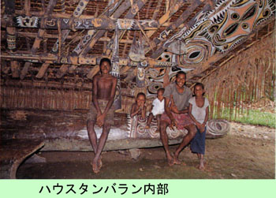

|
|
第７１ 遂に英軍に武装解除される
大日本帝国はポツダム宣言を無条件に承諾し、大東亜戦争(後に太平洋戦争と呼んだ)は昭和２０年８月１５日(１９４５年)に終
戦となっていた。そんな事は知る由もなく、私は山口斬込挺身隊長を命じられ、部下１２名を指揮し、敵に包囲され孤立無援のヌ
ンボクに在る第十八軍司令部を救援に赴く途中で、部隊本部から
『山口中尉は直ちに戦闘を中止し原隊に復帰すべし』という命令を貰いました。実に終戦の日から８日後の８月２３日の事でした。
それでも、部隊本部付の折田中尉から、本国では、８月１５日に終戦になったらしいという情報を貰っていました。なるほど、８
月１５日以降は、あれほど毎日来襲していた敵機が一機も飛来しない。どうもおかしいと肌で感じ取っていました。ひょっとする
と、戦争は終わったのかもしれないと思っていました。が、噂は事実だったのであります。
『貴官は直ちに戦闘を中止し原隊に復帰すべし』という命令を受領した時、嬉しさの余り、思はず、やった！という感情が高ぶり
『戦争はすんだ！日本に帰れるぞ！』と、天に向かって大声で叫んでしまった。すると側にいて、私の叫び声を聞き咎めた現役下
士官の××曹長が私に噛み付いてきた。
『山口隊長殿は戦争に負けて、そんなに嬉しいですかッ』と言って、私に食ってかかって来た。これは困った事になった、と心中
穏やかでない。が、私は即座に、戦争に負けて嬉しい筈はないだろう。戦争が済んだから『日本に帰えれる』と言ったまでだ。と
言って、その場をとりつくらった。言葉は不思議なもので、力を入れるところを強く言うと響きがまるで違って感じとられる。職
業軍人はその時点で、人生の目標を失ってしまい心中はお察し申し上げます。
それに比べ、私は戦争が終わったので、早く職場（鉄道省）に復帰し、自分の仕事をしたかっただけの事であります。
話は変わって、昔に溯りますが、予備役陸軍少尉に任官し１年程してから
『山口君、君は現役志願をしないか？』（陸軍省に転職しないか？）と、二度にわたって勧誘された事がありましたが、その都度
固辞しました。無線通信は土木屋の私には性に合いません。それよりも鉄道省の鉄道技師になりたかった。
ともあれ、ニユーギニアの山の中で停戦命令を受領し、部下は夫々原所属中隊に復帰し、山口斬込挺身隊の１２名とは別れ解散
しました。私にとって、４年３か月にわたる長い長い戦争は終りました。東部ニユーギニア作戦は３年３か月という長い歳月であ
りました。
ところで、終戦になったら、何んにもすることがない。なかにはこれからどうしょうかという人もいました。日没後はことさら
将来の事が不安になってくるのでしよう。まず、現実としてやってくるのが武装解除です。無線中隊長のゴマンさんは
『敵さんは日本の武士道を重んじ、武装解除とは言っても、将校だけには日本刀の所持を許可するであろう』という。日本軍は負
けた経験がないので、我々は武装解除とはどんな物か全然分かっていませんでした。私はどうでも良かった。生きて日本に帰るこ
とが一番大事でした。
『昭和２０年９月×日、ウエワク西方××××地点に集合し、武装解除を受けよ』という命令が部隊本部から伝達された。我々日
本軍は武装解除されてから、全軍がムッシュ島に集結させられるという。この時、軍通信隊は約３００人が生き残っていて、各地
区にバラバラに分散し自活していました。私はヤカンジャビンで自活して居ましたが、この命令を受領したので、軍刀とピストル
を腰に下げ、指定された地点に向かいました。ヤカンジャビンでは宣撫が旨く行っていたので、
３人の原住民が私どもの身の回り品を武装解除地点まで担いで来ました。戦に負けたという実感はありませんでした。丁度その時、
私どもの側を通り越して行く山砲隊の隊長さんは重い荷物を自分で担ぎ、何にも持たず体ひとつの軽装でいる私を、チラリッと横
目で見て、恨めしそうな顔をして先に進んで行きました。厳しい軍隊の階級を超越して、この時は、どうだ！とばかり嬉しかった
思い出があります。
ところが、それから間もなく、イギリス兵に遭遇した原住民のワラガが、青くなって私の所に飛んできて
『ヤマグチ、キャプテン、ミーベラ、フレッド』（山口隊長、私どもは怖い）という。前方を見たら、敵のイギリス兵３名がこち
らにやって来る。この情景を遠くからめざとく現認した私でさえ、戦場に来て、敵兵の姿を見たのはこれが初めてでした。敵兵の
捕虜は今まで何回も見たことはあるが、それとは別の複雑な感情が激しく脳裏を駆け巡りました。原住民を従えていた私はこの様
子を見て、原住民に体面が保てなくなると不安になって来ました。私は万事窮してしまったのです。
が、わざと悠然と構えていました。

『よろしい。解った。お前たちは部落に帰ってもよい』と、厳然として許可したら、３人の原住民は飛ぶように走り去って行った。
彼等の様子を見ていたら、一瞬、なんとも表現できない侘しい思いが脳裏をよぎりました。
英軍の３名の兵士が向こうからやって来た。私は目をつぶって観念しました。１人の下士官らしい兵が、私に軍刀を見せろと言
う。今頃になって、抵抗しても仕様がない。腰に提げている軍刀を差し出した。彼は軍刀を受け取り、鞘から刀身を抜いたが、こ
ずかの近くに小さい傷があるのを見つけ『ラプーン』と言って軍刀を返した。軍刀に傷があったので助かった思いでした。恥をか
かないですみ内心ホッとしました。こんな事もあって、間もなく集合地点に到着しました。
３人の英国兵は武装解除以前の我々から、何かを物色したかったのでありましようが、何も没収しないで、帰っていきました。
武装解除地点では、敵の天幕付近に日本の軍参謀らしい軍使が慌ただしく動き回っていた。何処からともなく集まって来た日本
軍の兵士が、ここに沢山たむろしていた。が、誰も無言のまま沈黙していました。
我々が整列した正面には、三八式歩兵銃が山のように積まれてある。その横には、日本刀も沢山置いてある。辺りを良く見たら、
武装解除地点の入り口付近では、三方面から敵兵が機関銃の引き金に指を掛けたまま、銃口が殺意をあらわにして、ヂーッと我々日
本軍を狙っていた。余り気持ちの良いものではない、むしろ殺気を感じ取りました。
一方、敵の指令部の幕舎内では、日本軍の軍使及び通訳が、敵の幹部将校となにやら交渉しているのが見える。いよいよ武装解除
を受ける順番が来た。ちょっと緊張したが何のこともなかった。兵隊は銃と帯剣と実弾を夫々指定された場所に捨てれば良いのであ
る。私は腰に下げていた軍刀を指定の場所にほうり投げた。次の場所ではピストルと弾を投げ捨てた。これで武装解除の儀式は終り
ました。
これで我々日本軍は丸裸になってしまった。また、同時に、日本国天皇の命令により、名誉の捕虜になった訳であります。後で捕
虜にも色々の捕虜が居ることを知りました。
英軍は最後まで戦い、抵抗した我々を尊敬して『Ｓ・Ｗ』と呼びました。それとは別に、終戦以前に捕虜になった者を『Ｐ・Ｗ』と
呼んで区別しました。敵は最後まで抵抗した我々を高く評価したのでります。敵ながら堂々たる態度に感服しました。
|